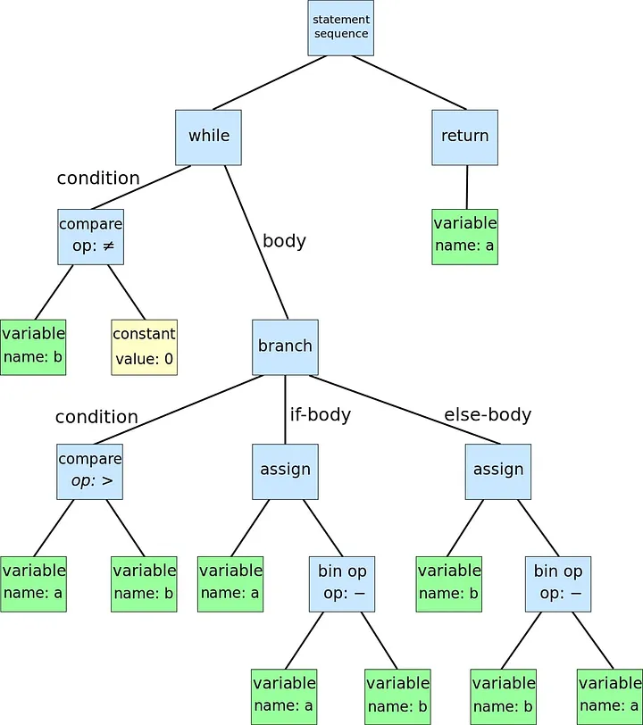

Compilers
“A compiler is a computer program that translates computer code written in one programming language into another language”.
The compiler is one component in a toolchain of programs that are used to create executable files from source code. In general, when a single compile command is called, a whole sequence of programs are invoked in the background. Let’s understand this process and how does a compiler work.
Compilation Steps
As stated before, the compiler itself is not the only “actor” when we are translating source code to executable code. Typically, we can divide this process in four steps:
- Preprocessing: it prepares the source code for the compiler proper. For example, in C and C++, this is translated to consuming all directives that start with the # symbol. An #include directive causes the preprocessor to open the named file an insert its content into the source code. On the other hand, a #define causes the preprocessor to substitute a value wherever a macro name is encountered. Note that this is very flexible on the language, and not all of them rely on a preprocessor.
- Compiling: it properly consumes the clean output of the preprocessor. We’ll discuss compiler steps itself soon, but basically it scans an parse the source code, performs typechecking and other semantic routines, optimizations and then produces assembly language as output.
- Assembling: the assembler consumes the output of the compiler, an produces object code. Object code can be described as “almost executable”, since it contains raw machine learning instructions in the form needed by the CPU. However, it does not know the final memory addresses in which it will be loaded, so it still contains some gaps.
- Linking: the final step is done by the linker, which consumes one or more object files and library files and combines them into one complete executable program. It selects the final memory locations where each piece of code an data will be loaded and “links” them together by writing in the missing address information. For example, if our object file calls the malloc function, it does not know initially the address of the function. Then, a zero (empty) address will be left where the address must be used. Once the linker defines the memory location of malloc, it must go back and write in the address at every place where malloc is called.
This the overview of how the compilation process works. For this article, we will see the compiling step deeper, since it can be split up into several stages.
Let’s think this up a little bit. If the compiler outputs assembly code and receives a preprocessed source code file in some programming language, how would you translate this? Well, the first obvious step is to read up the source file and form tokens. This is know as scanning.
Scanning
It is the process of identifying tokens from the raw text source code of a program. It has to fit in tokens in many categories, like keywords, identifiers, numbers, comments, etc.
For example, this could be a simple C function to scan tokens:
token_t scan_token( FILE *fp ) {
int c = fgetc(fp);
if(c==’*’) {
return TOKEN_MULTIPLY;
} else if(c==’!’) {
char d = fgetc(fp);
if(d==’=’) {
return TOKEN_NOT_EQUAL;
} else {
ungetc(d,fp);
return TOKEN_NOT;
}
} else if(isalpha(c)) {
do {
char d = fgetc(fp);
} while(isalnum(d));
ungetc(d,fp);
return TOKEN_IDENTIFIER;
} else if ( . . . ) {
. . .
}
}
Note that the snippet is not complete since we haven’t defined those TOKEN_ identifiers, but the logic remains. We need to loop and keep identifying tokens, knowing that it can be part of a sequence. For example, if I identify a token “!”, it could be the not logical operator or a part of the “!=” sign, so the character which is not part of the sequence is put back. This process where an unexpected item doesn’t match the current objective and it must be put back for later is known as backtracking. When scanning a large number of tokens, it is common to use such things as Regex and Finite Automata. I will not get into detail about these topics here. In general, if you want to build a scanner, you can use something like C Flex.
A simple scanner example can be found here: https://github.com/Lorenzobattistela/compilers/tree/main/scanner
Parser
Parsers are widely known in all tech fields. Let’s continue with our logic. We read the source file in plain text and grouped individual characters to form complete tokens. But this does not mean nothing at all yet. If I know I have “!=”, what could I do with it alone? Nothing. So the parser consume the tokens an groups them together into copmlete statements and expressions, much like words are grouped into sentences in a natural language. The parser is guided by a grammar which states the formal rules of composition in a given language. The output of a parser is an Abstract Syntax Tree that captures the grammatical structures of the program.
But of course, not every sequence of words make a valid sentence. Parsing a computer program involves describing the form of valid sentences in a language. This formal statement is known as Context Free Grammar (CFG). They allow recursion and can express richer set of structures. But a CFG is not easy to parse, because it can contain ambiguities an other problems that make hard to write an automatic parser. Therefore, in general we consider two subsets of CFGs known as LL(1) and LR(1) grammars.
LL(1) grammars are CFGs that can be evaluate by considering only the current rule and next token in the input stream. Not all language structures can be expressed as LL(1) grammars.
LR(1) grammars are more general and powerful than LL(1), but more complex to parse.
For this article, I’ll only briefly describe the parts of a CFG, because the whole process of sentence deriving, resolving ambiguities and converting grammars can be quite complex (but maybe I’ll approach it in another article). In addition, typically a parser generator is used and the only reason for you to build a parser by hand is to study. (IMO).
Parts of a CFG
- Terminal: it is a discrete symbol that can appear in the language, otherwise known as a token (from scanners). Examples of terminals are keyword, operators and identifiers. We use lower-case letters to represent terminal.
- Non-terminal: represents a structure that can occur in a language, but is not a literal symbol. Examples are declarations, statements and expressions. We use upper-case letters to represent them. (e.g P for program, S for statement, etc.)
- Sentence: it is a valid sequence of terminals in a language, while a sentential form is a valid sequence of terminals and non-terminal. Greek symbols represent sentential forms.
A CFG is a list of rules that formally describe allowable sentences in a language. The left-hand side of each rule is always a single non-terminal. The right-hand side of a rule is a sentential form that describes an allowable form of that terminal. For example, B -> xXy indicates that non-terminal A represents a terminal x followed by a non-terminal X and terminal y.
The parsing processing returns an AST, which is a representation of abstract synctatic structure of text written in a formal language. Each node of the tree denotes a construct occurring in the text. Ex:

By Dcoetzee — Own work, CC0, https://commons.wikimedia.org/w/index.php?curid=14676451
In the parsing process, we have semantic routines that traverse the AST and derive additional meaning (semantics) about the program from the rules of the language an the relationship between elements of the program. For example, suppose this AST:
x = 5
y = 10
z = x + y \* 2
=
/ \
x +
/ \
y *
/ \
10 2
And that we have the rule:
1: Variables must be declared before use.
The semantic routine would ensure that ‘x’, ‘y’ and ‘z’ have been declared before use.
Type checking
After the parser has successfully grouped tokens into complete statements and expressions and created an Abstract Syntax Tree (AST), the next crucial step in the compilation process is type checking. Type checking ensures that the program adheres to the language’s type system rules, verifying that operations are performed on compatible data types and that variables are used in a manner consistent with their declared types.
The type checking process traverses the AST, examining expressions and statements to confirm their semantic correctness. Type theory can get quite complex, so I recommend reading some stuff about it. https://en.wikipedia.org/wiki/Type_theory
Failure to pass the type checking phase results in compilation errors or warnings, indicating the specific issues that need to be addressed by the programmer. This phase plays a crucial role in ensuring the reliability and correctness of the generated code.
Once type checking is successfully completed, the compiler proceeds to generate an intermediate representation (IR) of the program, which captures the essential semantics and type information. This IR forms the basis for subsequent optimization and code generation stages.
Intermediate Representation Generation
The generation of the Intermediate Representation (IR) occurs immediately after parsing. During this stage, the compiler takes the AST and transforms it into a more abstract, language-independent representation that captures the essential semantics of the program. The IR represents the program’s logic and data flow in a way that is easier to optimize and translate into machine code. This transformation simplifies further analysis and optimizations.
The IR generation stage may involve converting the AST into a series of intermediate code instructions or data structures that can be easily manipulated and analyzed by subsequent compiler stages. The specific form of the IR can vary depending on the design of the compiler.
Optimization
Once we have the IR generated, one or more optimization stages can be applied to improve the program’s performance efficiency. These optimizations operate on the intermediate representation rather than the original source code because the IR is a more structured and abstract representation of the program, making it easier to analyze and optimize. This is another subject that I won’t get much into detail, since I plan to write some articles just on it. But if you want to look up, some common optimizations include dead code elimination, constant folding and loop unrolling.
Code generator
Finally, a code generator consumes the optimized IR we got and transforms it into a concrete assembly language program. Typically, a code generator must perform register allocation to effectively manage the limited number of hardware registers, and instruction selection and sequencing to order assembly instructions in the most efficient form.
Conclusion
Well, understanding how a compiler works is really interesting and the basis is quite cool. Building a compiler is also a nice side-project (and something i’m working on too). I plan to write more articles in this subject and go deeper into some subjects like type checking and finite automata.